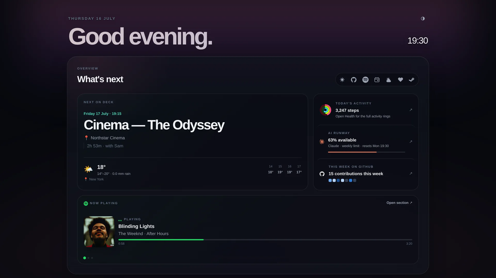
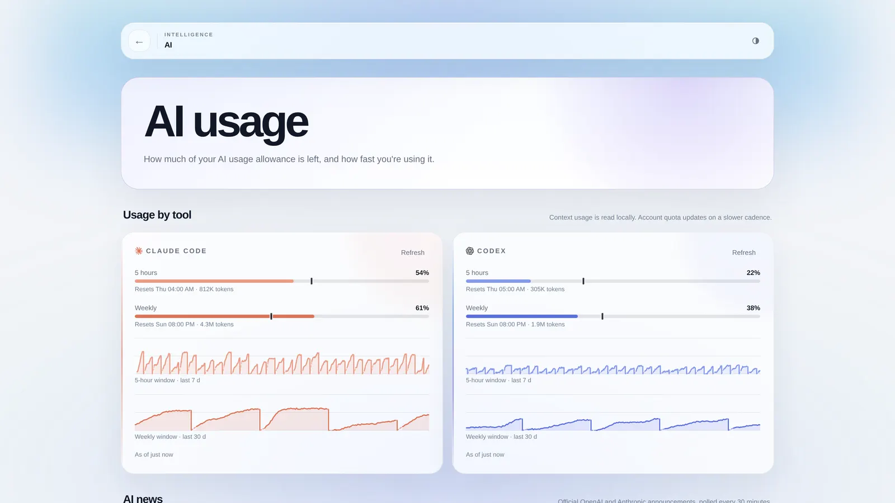
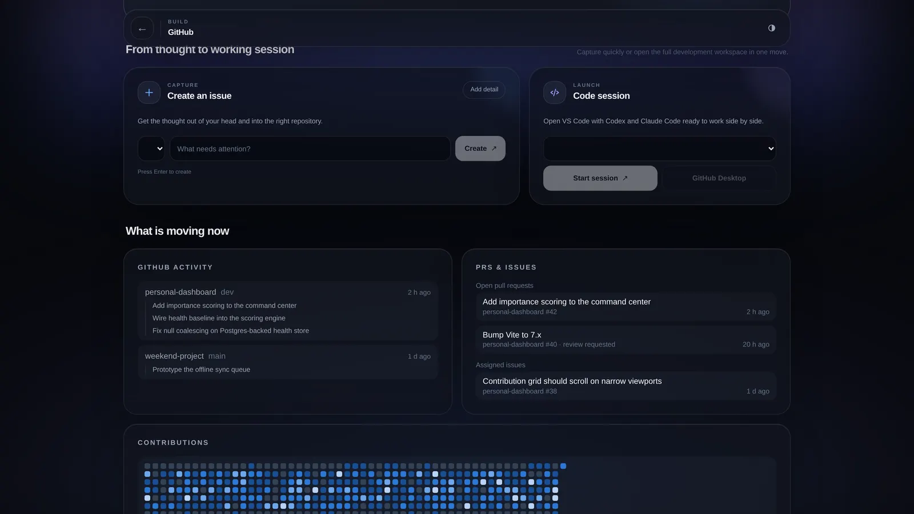
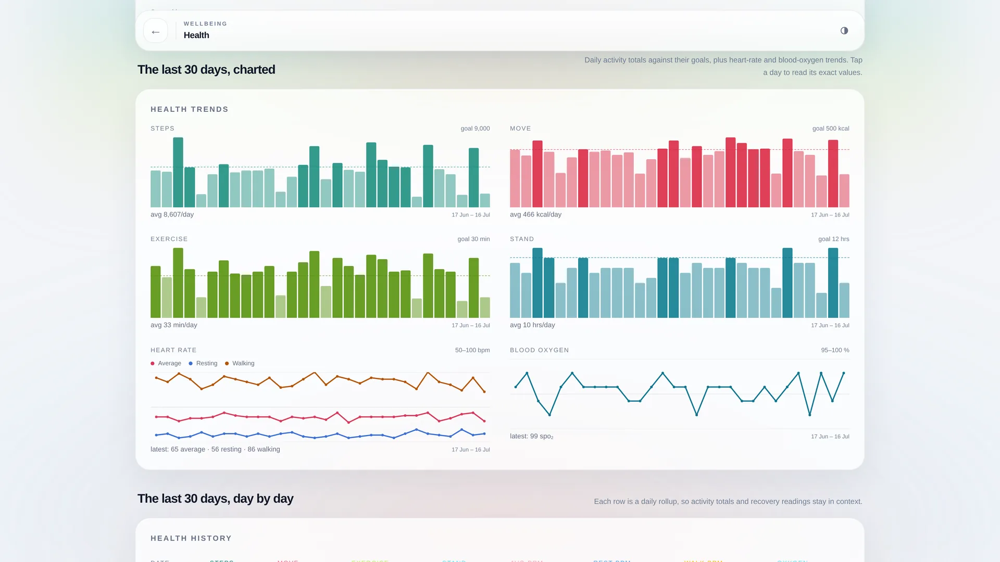
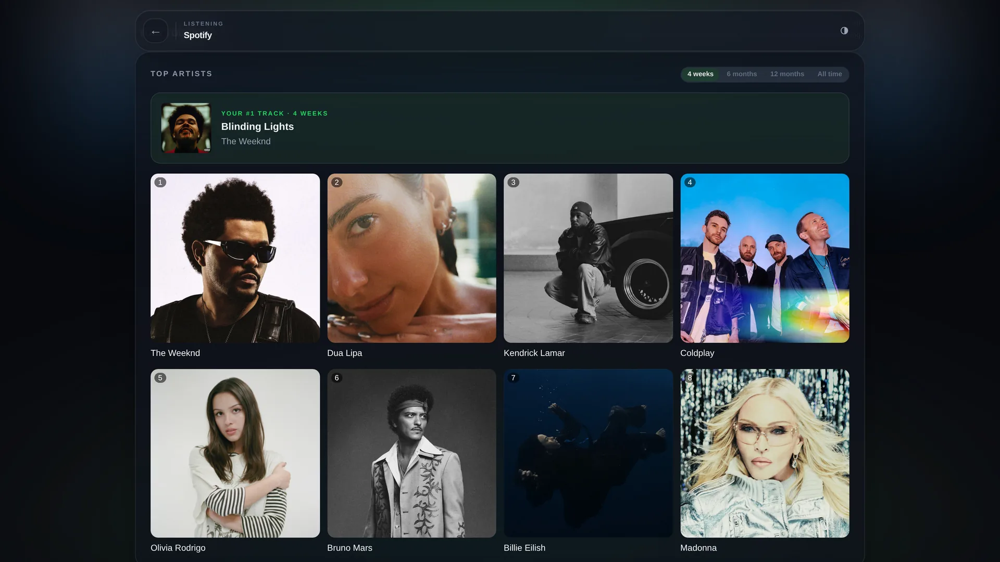

Nohm rassemble météo, GitHub, usage d'IA, santé, jeux et musique dans un seul tableau de bord. Il tourne en local et se consulte depuis le téléphone. Interface française par défaut, anglais dans les paramètres.
Ou en développement : git clone puis npm install et npm run dev — Node 22.5+.





Captures de la démo — un personnage fictif, aucune donnée réelle. L'usage Claude / Codex, l'agenda et les parties affichés ici sont des exemples.
Chaque source de données est un connecteur validé côté serveur. Le planificateur les interroge, garde le dernier état correct, et n'envoie au client ni jeton ni détail d'erreur sensible.
Prévisions MET Norway à partir de votre position — un simple bouton, pas de clé.
Agenda iCloud, messages et brief du jour, réunis dans une seule colonne.
Activité récente, santé des dépôts, et lancement d'une session de code.
Consommation Claude Code et Codex, rythme, et fenêtres de quota, lues en local.
Anneaux d'activité, récupération et tendances via un raccourci Apple Santé.
Steam, Valorant, Clash Royale et Clash of Clans — profil, parties, succès.
Cider pour Apple Music en local avec contrôle, Spotify et Last.fm en lecture.
Un raccourci global met les rafraîchissements en veille pendant que vous jouez.
Un pied de page discret : temps de fonctionnement et état du serveur local.
Un connecteur = un schéma Zod partagé, une fabrique côté serveur, un widget côté client. Le serveur planifie, met en cache le dernier état valide, et diffuse les mises à jour au client dès qu'elles arrivent.